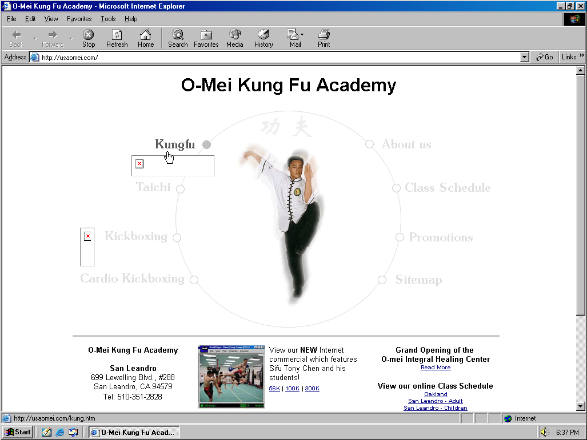

Establishing Wushu Online
How US west coast wushu schools presented themselves online in the 2000s–early 2010s
By Heidi Wang · 2025 June 07 · 1126 words
O-Mei Kung Fu Academy’s home page navigation menu as of 2001/11/29. Screenshot of archive.org’s capture of usaomei.com, viewed through oldweb.today’s browser emulation of IE 6. The Chinese text in the circle at the top is responsive to the menu option being selected; here, the cursor is hovering over the top left menu option.
Every so often, I find myself scouring the web for any sign of my old kung fu school that closed over a decade ago, O-Mei. Recently, I thought to go look for their old address on Google Maps, and I encountered archived images of the old building front, with the same logo and wordmark signs on the building that had been there before. It was heartwarming to see that the school was still on the map in some way, and it meant that there must be other resources I hadn’t yet found either. I decided to look to another hitherto untapped resource, the Internet Archive Wayback Machine.
Today, there are many wushu and kung fu schools across the United States. Schools often advertised themselves as either wushu or kung fu schools, but that which they primarily taught did not always line up with their name. Some of it was probably marketing, since kung fu was a more well-known term here, like in the case of Elite Kung Fu, but some of it was also probably changes in teaching focus as student interest and competition landscapes changed, as seemed the case for US Wushu Center.
I knew of countless schools throughout the country, especially ones that had produced top athletes who made it to the national wushu teams. I decided to focus on the old websites of just a few on the west coast that were personally important to me. I was familiar with some of their current websites, and I knew their shifus and school dynamic well, so I felt like that additional context could help me understand better how they were trying to present themselves. These schools were US Wushu Center, which was first archived in 2000, Summit Wushu Academy, first archived in 2004, O-Mei Kung Fu, from 2001, Champion Wushu & Arts Center from 2011, and Elite Kung Fu from 2011.
There was a range of activity levels that these websites saw. Elite’s website saw effectively no changes from its first capture on 2011/07/02 until 2019/09/03, but was suddenly entirely replaced the very next day. Summit’s website, after the school changed hands some time between 2005 and 2012, was constantly changing and felt like it was always a work in progress, often getting published with filler text and images from the templates they used. These seemed to indicate differences in how much they prioritized having an up-to-date website, but also in how much they prioritized presenting a finished work, both of which impacted the level of professionalism they demonstrated to site visitors.
There also appeared to be a range of origin stories for these websites. At least for the first several years, as evidenced by the copyright notices on their site, US Wushu Center outsourced their web development to companies in the business of creating websites for organizations like them, who wanted an online presence but lacked the technical knowledge or time to make it themselves. The wording of the copyright statements also showed that these organizations looked for differing levels of credit for their work, possibly reflecting the amount of involvement they had in the project or changing business standards in that realm. US Wushu Center was the only school that had any indication of this outsourcing on their site at any point. Summit, O-Mei, and Elite all included only their school’s name as the copyright holder. Over time, US Wushu Center also stopped crediting outside sources.
On the other side of the scale, Champion did not include a copyright on their website at all. Their domain name was a facade that redirected to a Google Site, where their website was actually hosted. This didn’t seem like a move that a professional web development business would make, so it seemed to me like Champion must have made their website themselves, by the work of either their shifu, students, or people they knew. Overall, it seemed that a lot of these schools’ website development was inexperienced, and that websites were not a super high priority for any of them.
However, the professionalism of the web design had no relationship with the success of the schools at their actual job, producing high-performing athletes. Clearly, how professional their websites were was unrelated to how professional their coaching was. Indeed, regardless of the outdated or unfinished websites, students flocked to those schools for the strong reputations they and their shifus had in coaching wushu.
The schools’ websites and the classes at those schools also imparted vastly different parts of the shifu’s knowledge of the martial art. On the websites, there is a strong emphasis on explaining wushu’s health benefits, philosophies, and deep traditions. But in class, students are instead taught with a strong emphasis on the physical movements and outward expression, preparing them for competition at the national and international level. The shifus may want to impart cultural and spiritual knowledge in their martial arts, and the writing that they present to online audiences reflects that, but the pursuit of competitive achievements to satisfy both economic needs of bringing in more students and personal goals are more powerful in practice.
This is also reflected in the languages that were used on the websites. Elite’s long-standing first version of their website was the only one that wrote significant portions of text in Chinese. They had English and then Chinese versions of the same information on all their subsites. The other schools’ websites only included terminology in Chinese, and in many places did not even include the Chinese characters themselves, only pinyin or other romanization. The shifus at almost all of these schools spoke Chinese much more comfortably than English, and Chinese was the language of wushu and its culture. However, the setting of these schools made it necessary for these websites to be built for English-speaking visitors. Whether these sites were meant to attract a customer base, performance requests, or media attention, they were operating in the United States, where the common language was English. Rather than focusing on communicating ideas as fully as possible with other Chinese-speaking people who may make up only a small part of their local communities, they chose to put in the extra effort to translate their knowledge into a different language so they could reach a wider audience.
As much as these theories may make sense, they’re nothing more than theories without direct input from the shifus themselves about their experiences. I may seek that out someday, if I can get over my crippling fear of authority figures and speaking Chinese with them. Until then, I’ll rest a little easier knowing that these websites still exist in the archives, as incomplete as they are, and that the histories of these wushu schools have not been forgotten by the Internet.
O-Mei Kung Fu Academy’s home page as of 2009/03/22. Screenshot of archive.org’s capture of usaomei.com, viewed through oldweb.today’s browser emulation of IE 6. The Promotions popup window has been moved to the bottom right to show the header graphics. The entire webpage was likely intended to have a green background, given the white text on white background under the Schools heading (and in many places on other subpages) and cut-off background shape edges, so this was filled in with discretion by the author.
—
A table of the school websites discussed here can be found in Appendix A. Website archives can be viewed through the Internet Archive Wayback Machine at archive.org and through old browser emulation at oldweb.today.
Heidi Wang
Heidi Wang is a third year undergraduate student in Human Centered Design & Engineering: Data Science with a minor in Informatics at the University of Washington Seattle. She has practiced wushu for almost 15 years, primarily in the Bay Area, and has more recently become closely acquainted with schools in the Portland area.
Appendix
A. Table of Schools
| Name | Main Shifu | City | URL | First Archived | Captures |
|---|---|---|---|---|---|
| US Wushu Center | Yu Shaowen, later also Gao Jiamin | Portland OR | uswushu.com | 2000/06/21 | 239 |
| Summit Chinese Martial Arts Institute, later Summit Wushu Academy | Xue Yi, later Phillip and Peter Dang | Vancouver BC, later Clackamas OR | summitwushu.com | 2004/04/07 | 143 |
| O-Mei Kung Fu Academy | Tony Chen and others | San Leandro to Milpitas | usaomei.com | 2001/11/29 | 119 |
| Champion Wushu & Arts Center | Ding Wei | Fremont to Pleasanton | dingweiwushu.com | 2011/02/02 | 15 |
| Elite Kung Fu Learning Academy LLC | Gao Jie | Fremont | elitekungfu.org | 2011/07/02 | 88 |
*usaomei is no longer an active domain. omeiacademy.com is now the domain for Omei Academy. Zou Yunjian Shifu, who once taught at O-Mei Kung Fu Academy, still teaches taiji at Omei Academy.
B. Notes of Interest
i. School Trivia
My own memory of the timeline of O-Mei’s demise has always been unclear, given that I was a five-year-old kid at that time. From the archives, changes in their website presentation indicate that O-Mei met its end as a kung fu school between 2009/03/22 and 04/22. After that time, the domain served as a site for Omei Academy, an organization largely unrelated to the previous one using that URL, in what I would consider an example of link rot. By 2014/01/06, the domain had also ceased to be used by the new organization, and it has since been inaccessible.
Ding Shifu still writes in his website bio today that he is the “current” coach for the three children of the Magallanes family, and on his website from 2011/02/02, he has a picture of him, Gao Shifu from Elite, and the siblings together. The three had also coached for Elite before 2014/10/18, but were no longer listed as coaches on their About Us site by the next capture on 2015/02/09, signaling an end to their coaching there. This seems similar to but slightly different from the situation of Stephanie Lim. She was Ding Shifu’s student for over a decade, after which she left to coach at Elite.
ii. Web Design
Summit was the only one of the five that ever had a landing page with an enter link to their home page. The other four all directly linked to their home page. Summit also dropped the enter landing page when the school changed hands after 2005.
Champion’s website was the only one that had a scrollbar customized and built into their website, so the other sites depended on the browser to provide that accessibility feature.
The repeating tessellated image on the right side of US Wushu Center’s site was emblematic of web design of that time.
O-Mei’s site had white text on white background in many places, even when viewed through oldweb.today, as well as light grey and yellow text. I would attribute that to the archived capture being incomplete, but if not, that would be more than an accessibility issue, being entirely illegible.
Summit’s website was not centered, but all the other four, including US Wushu Center and O-Mei which were older than Summit, were.
Summit and O-Mei had more simple home pages with more limited text, whereas US Wushu Center’s landing page had almost full screen text and felt much more like you were thrown directly into the thick of it, even though the amount of information on the home page was not significantly greater than the rest of them.
The sites overall had more ornate graphics than today’s professional business websites, including nav bars made up of scroll graphics instead of just text. O-Mei actually had a very creative circular navigation menu, with the center being a posed image of the head shifu with a low opacity double as a shadow, and a piece of Chinese text at the top of the circle that was responsive to hovering over the menu options.
There was a mix of these custom creative graphic elements, like the tessellated imagery, navigation button icons, and graphic backgrounds, with the professional business context of these wushu schools, which was very unlike visual presentation of such websites today, which are usually clean, cold, and low color.
iii. Limitations
Two of the websites were only first archived in 2011, so the web design values that they display are already somewhat removed from 90s-00s era web design.
To read in-depth the many subsites of each website and the changes in each across time, additions, and removals would have offered a more complete understanding of these websites, but exceeded the scope of this piece.